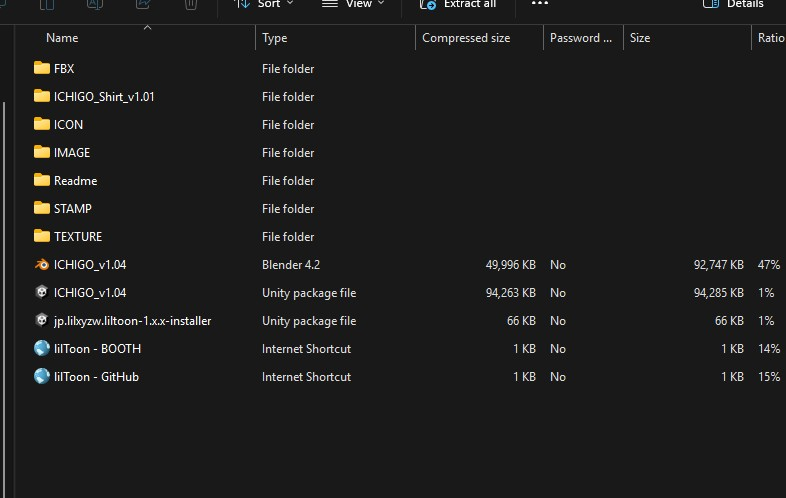

| Step1: Click on the seetting gear icon and in general clcik view all installed version and see id the version is installed correctly. | |
| Step 2: Click on Create new Project, then select Unity 2022 Avatar Ptoject and name the project. | |
| Step 3: In the manage pachages click the plus iocon on VRCFury and Modular Avatar (The packages lkist vary on whats installed). The click on open project. | |
| Step 1: This applies to any avatar/asset, look for the name of the ichigo and poyokmi shader, when importing a box will appear just hit import and wait for the folder to appear in asset on the bottom left corner. |  |
|
| Step 2: Drag the model from the folder to the grid pattern, then click VRChat SDK then control then a control panel will appear login in then fill all the box in the builder tab then hit build and pbulish and the avi will be uploaded | |
|